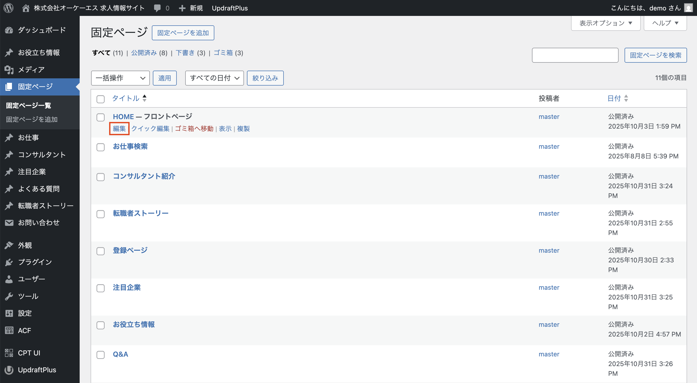
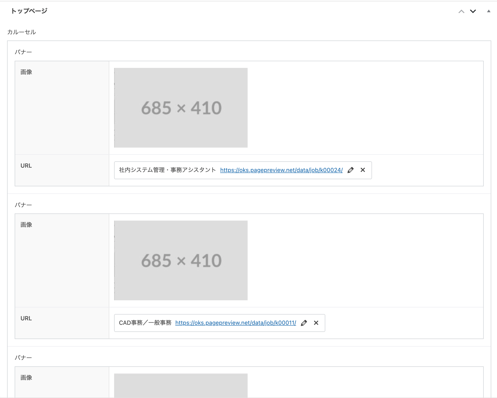
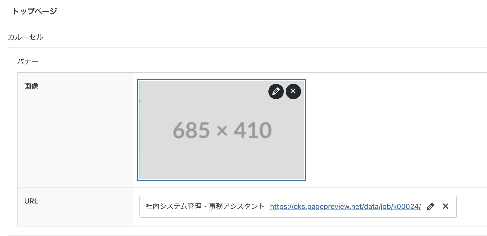
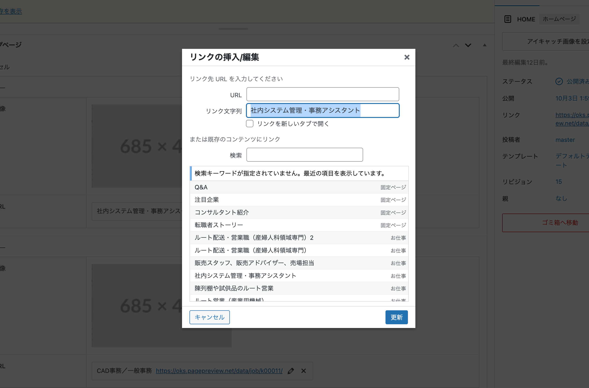

カルーセル

1 編集画面、サイドナビ「固定ページ」→「HOME」を編集

左側のメニューから「固定ページ」をクリックします。
固定ページ一覧から「HOME」を見つけて、「編集」リンクをクリックしてください。
※権限がない場合は管理者にお問い合わせください。
2 カルーセル画像変更・alt編集
編集画面内で変更したい画像をクリックすると編集オプションが表示されます。

画像編集、画像削除のアイコンをクリックすると、alt設定や画像差し替えが可能です。
※推奨画像サイズ: 685×410px
注意: 画像は6枚まで設定可能です。
3 リンクの編集

リンクを編集する場合は、編集アイコンをクリックして、リンク編集モーダルから変更します。
新しいタブで開く場合は「リンクを新しいタブで開く」にチェックを入れてください。